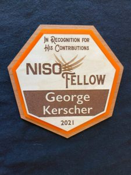
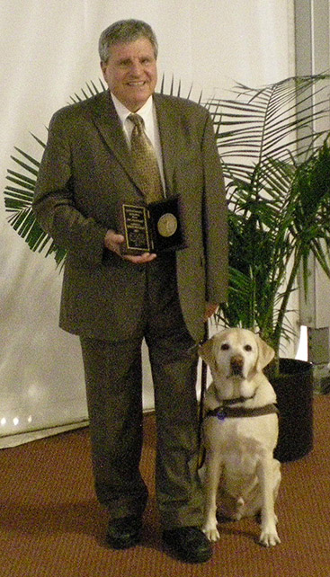
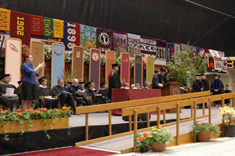
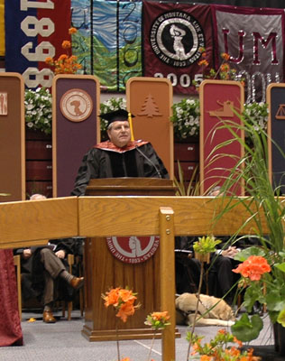

George Kerscher Ph.D.
Last updatedAugust 2026
George Kerscher appointed to the Microsoft Blind Advisory Council
In November 2025, George Kerscher was asked to join the Microsoft Blind Accessibility Council. The group meets monthly on Microsoft Teams and has a focus on improving Narrator and the accessibility of other Microsoft technologies.
George Kerscher invited to the NFB Jacobus tenBroek Library National Archives Advisory Committee
In2025 George Kerscher joined as a founding member of the Jacobus tenBroek Library and National Archives Advisory Committee .
The purpose of the Jacobus tenBroek Library and National Archives Advisory Committee will be to support and inform the initiatives of the Federation’s library as laid out in the tenBroek Library & Archives Strategic Plan. The purpose of the advisory committee will be to serve as an advisory body to the President of the NFB, tasked with creating recommendations for policy and practice to help the Federation achieve its strategic goals for its library and archives.
George Kerscher Named NISO Fellow
In March 2021 at The National Information Standards Organization (NISO) Virtual conference, Todd Carpenter, Executive Director, announced that George Kerscher is being recognized as a NISO Fellow for his lifetime Achievement in Information Access.

In his acceptance remarks, George said,It is a tremendous honor to be named a NISO Fellow, and I look forward to the day when everything is published in a way that people like me with disabilities can consume it.
To learn more, read the Interview with George Kerscher for Inclusive Publishing news.
George Kerscher Receives the Dr. Isabelle Grant Award
On November 29, 2018 at the Lighthouse for the Blind first Gala event, George Kerscher and six others were honored for their contributions to the field of blindness. In his acceptance remarks George said, “I started my career as a teacher, which makes receiving the Dr. Isabelle Grant Award even more of an honor. For those that do not know of Dr. Isabelle Grant, she was an amazing blind advocate for equal education and integration of students who are blind with the mainstream of education.”
He went on to say, “I want to thank the Lighthouse for the Blind in San Francisco for this award, and I want to acknowledge the DAISY Consortium and all our libraries around the world that serve persons with disabilities. It is they who will be making materials available to their patrons now that the Marrakesh Treaty is in place. Equally important is the leadership the DAISY Consortium is taking in the development of mainstream publishing standards within the W3C. The EPUB Standard is being embraced by publishers and tech companies throughout the world. All kinds of books and publications are being created “Born Accessible, a term coined by Betsy Beaumon CEO of Benetech and Bookshare. The publishers that embrace the Born Accessible model of inclusion are changing the world. The tech companies by making their reading Apps fully accessible showcase how people who are blind can have the same book, at the same time, and at the same price as anybody else in society.”
He concluded by saying, “ The availability of Born Accessible mainstream books and the integration of services provided by libraries serving the blind and print disabled people around the world means that people with disabilities will be able to fully participate in education and society. Dr. Isabelle Grant would be proud of all this work, as I am. There still is a lot more to do. Knowledge that is communicated through symbols, such as that used in the fields of Mathematics, Chemistry, and Music is just beginning to become accessible, and the standards and technology must improve in these domains. We have made great strides together and we need to continue the march toward full access to information and knowledge.”
See the Lighthouse press release at:
Lighthouse for the Blind first Gala
and you can read about the amazing life of Dr. Isabelle Grant:
Dr. Isabelle Grant from the Dr. Jacobus tenBroek Library
George Kerscher Now Director Emeritus at Guide Dogs for the Blind
as of July 1, 2018, George Kerscher termed off the Guide Dogs for the Blind (GDB) Board of Directors after nine years of service, which is the maximum allowed. George's new title is Director Emeritus at GDB, and he remains in close contact with the GDB family.
George Kerscher Receives the BISG Industry Champion Award
On Friday, September 30, 2016 George Kerscher won the BISG Industry Champion Award. The award honors an individual whose efforts have gone beyond the requirements of his or her position to advance the publishing industry while embracing BISG’s mission to facilitate innovation and shared solutions for the benefit of all companies and practitioners who create, produce, and distribute published content. At the awards ceremony Bill Kasdorf read the following statement,
"George Kerscher has worked tirelessly for decades to promote accessibility and foster collaboration between organizations internationally. Since 1987, when he coined the term "print disabled," he has been dedicated to developing technologies and standards that make information not only accessible, but also fully functional, to those who are blind or have a print disability, and to help publishers understand that by doing this, they are making their content better for everybody. George is Chief Innovations Officer of the DAISY Consortium; Senior Advisor, Global Literacy, to Benetech; President of the IDPF; Chair of the DAISY/NISO Standards Committee; Chair of the Steering Council of the W3C Web Accessibility Initiative (WAI); and is on the Advisory Board of the Institute of Museum and Library Services (IMLS), a Presidential appointment. He has been an invaluable member of the BISG EPUB 3 Grid Working Group, heading up the Accessibility aspects of the Grid, and the Accessibility Working Group. He has been not only our lodestar on accessibility, he's the industry's. He is the very definition of Industry Champion. Plus he's a heck of a wonderful person, and Michelle Obama loves his dog."
George Kerscher Joins Benetech as Senior Advisor, Global Literacy
On July 1, 2016, George Kerscher joined the Benetech team as "Senior Advisor, Global Literacy." The role with Benetech will compliment the work he does in the DAISY Consortium as Chief Innovations Officer. "I have always admired the work done at Bookshare and the other Benetech areas of focus. Now I am looking forward to moving the organization forward in any way I can," said George Kerscher
Celebrating 25 Years with RFB, RFB&D, and Learning Ally
On June 30, 2016 George celebrated 25 years with Learning Ally. When he started in July of 1991, Recording For the Blind was the name of the organization. Learning Ally is the new name. "Learning Ally is doing great work," Said George Kerscher. However, George decided to transition to become an independent contractor doing work under "George Kerscher LLC."
George Kerscher Becomes Chief Innovations Officer with the DAISY Consortium
Successful succession planning at the DAISY Consortium saw Richard Orme become the CEO of the DAISY Consortium in May of 2015. George's role shifted to Chief Innovations Officer within the DAISY team. George said, "I am delighted to have Richard Orme take over as CEO. I am also delighted that I will continue working on standards and innovations within the digital publishing community."
George Kerscher Appointed to the IMLS Advisory Board
On May 8, 2013, Associate Justice of the Supreme Court Stephen Breyer administered the oath of office to George and four other individuals who will serve on the National Museum and Library Services Board. Appointed by President Barack Obama, the National Museum and Library Services Board is an advisory body that includes the director and deputy directors of Institute of Museum and Library Service and twenty presidentially appointed members of the general public who have demonstrated expertise in, or commitment to, library or museum services. Informed by its collectively vast experience and knowledge, the Board advises the IMLS director on general policy and practices, and on selections for the National Medals for Museum and Library Service
White House Highlights George Kerscher as a "Champion of Change" for his Dedication to STEM for People with Disabilities
On May 7, 2012 , George Kerscher was one of fourteen individuals honored at the White House as Champions of Change for leading the fields of science, technology, engineering, and math for people with disabilities.
"STEM is vital to America’s future in education and employment, so equal access for people with disabilities is imperative, as they can contribute to and benefit from STEM," said Kareem Dale, Special Assistant to the President for Disability Policy. "The leaders we’ve selected as Champions of Change are proving that when the playing field is level, people with disabilities can excel in STEM, develop new products, create scientific inventions, open successful businesses, and contribute equally to the economic and educational future of our country."
The Champions of Change program was created as a part of President Obama’s Winning the Future initiative. Each week, a different sector is highlighted and groups of Champions, ranging from educators to entrepreneurs to community leaders, are recognized for the work they are doing to serve and strengthen their communities.
See the video of the event at the White House.
AFB Names Kathleen Mary Huebner, Ph.D. and George Kerscher, Ph.D. 2012 Migel Medal Recipients
On December 6, 2011)The American Foundation for the Blind (AFB) announced the 2012 winners of the Migel Medals, the highest honor in the blindness field. The 2012 recipients are George Kerscher, Ph.D. and Kathleen Mary Huebner, Ph.D.
"It is an honor to present these medals to George and Kathleen for their outstanding achievements in the blindness and low vision field," said Carl R. Augusto, AFB president and CEO. "In dedicating their professional lives to ensuring that people with vision loss can live healthy and independent lives, the 2012 Migel Medal awardees are truly worthy of this special recognition."

see the announcement on AFB's website
George Kerscher Nominated for the Commission on Accessible Instructional Materials in Postsecondary Education for Students with Disabilities
In August 2010, George Kerscher was nominated to serve on the Commission on Accessible Instructional Materials in Postsecondary Education for Students with Disabilities . The Commission will have up to one year to make recommendations to the U.S. Congress for improving access to and the distribution of instructional materials in accessible formats.
George Kerscher Elected President of the International Digital Publishing Forum (IDPF)
In December 2009, George Kerscher was elected president of the IDPF, the trade organization that is setting the standards for eBooks and publications in digital formats. EPUB, is a trio of specifications that has been adopted in the publishing arena to deliver all types of digital publications. The challenge in the future will be to incorporate all types of content and to integrate rich media into the standards, while maintaining interoperability. Of course, access to digitally published materials must be fully accessible to persons who are blind and print disabled.
George Kerscher Elected to the Board of Guide Dogs for the Blind
In August 2009, George Kerscher was elected to the Board of Directors of Guide Dogs for the Blind located in San Raphael, California. George with current guide dog Mikey, and retired guide Nesbit are graduates of Guide Dogs for the Blind, the premier non-profit organization in the United States providing guide dogs, training, and graduate services to persons who are blind.
George Kerscher named as chair for the EPUB Maintenance Activity
The IDPF membership has approved the EPUB maintenance working group. George Kerscher will act as chair and Garth Conboy will be vice chair. The area for the activity can be found at: http://www.daisy.org/epub/ The work will begin in August 2009.
George Kerscher receives the 2008 Dr. Roland Wagner Award
On July 10, 2008 George Kerscher, PhD received the 2008 Dr. Roland Wagner Award at the 11th International Conference on Computers Helping People with Special Needs (ICCHP) In Linz, Austria.
The Wagner award is named for the founder of ICCHP, a pioneer in information and communications technology for people with disabilities in Europe. The award was presented to Kerscher for his tireless efforts to ensure equal access to information by people with print disabilities. Read the DAISY press release.
George Kerscher receives Dr. Jacob Bolotin Award from National Federation of the Blind
On July 4, 2008 George Kerscher was named among the first recipients for the Dr. Jacob Bolotin Award which recognizes individuals and organizations working in the field of blindness that have made outstanding contributions toward achieving the full and equitable integration of individuals who are blind into society. The award was made at the 2008 National Federation of the Blind conference held in Dallas, Texas. More information about the Jacob Bolotin award Can be found on the NFB Web site.
Awarded a Doctorate from the University of Montana

On May 12, 2007 at the graduation ceremony at the University of Montana, George Kerscher was awarded a Doctorate of Humane Letters, the highest honorary degree the University can bestow. The initiative was initiated from within the Computer Science Department. The recommendation received the unanimous endorsement of the CS Department, the University faculty, and the Board of Regents.

Two photos shown are of Dr. Dennison, President of University of Montana with George Kerscher to his right. The other is of George Kerscher making his acceptance speech. The recording is of Dr. Dennison's remarks followed by George Kerscher's acceptance. George Kerscher is wearing the graduation robe, cap and hood awarded as part of the doctoral process.
Recording of George Kerscher's acceptance speech (MP3) Also A text transcription of the presentation.
Since January 2007, Re-elected to the Board of the IDPF
George Kerscher, who was one of the founding members of the Open eBook Forum (OeB), now the International Digital Publishing Forum (IDPF) was re-elected to the Board.
Since January 2006 serving on the National Instructional Materials Accessibility Center (NIMAC) Advisory Committee
George Kerscher was asked to serve on the Advisory Committee for the NIMAC. The NIMAC has been established as the repository for K-12 publishers to deposit XML files using the DAISY Standard that conform to the NIMAS guidelines for quality. More information about the NIMAC can be found at the NIMAC Web site.
Since September 2005 Chair of the DAISY/NISO Standards Committee, formally the ANSI/NISO Z39.86 Advisory Committee
In September 2005, George Kerscher became the chair of the Advisory Committee to the DAISY/NISO Standard. As his first move as chair, he initiated a change in policy to open the committee's work to a broader audience and make the process transparent. A general call for participation by experts was broadly circulated and companies stepped forward making their best people available for standards work. The work plans and minutes will be available from the Z39.86's maintenance Web site.
George Kerscher Receives Catalyst Award
The 2004 Harry Murphy Catalyst Award was presented to George Kerscher at the CSUN Technology & Persons with Disabilities Conference on March 16, 2004. This biennial award is presented by the Trace Center to honor those who bring people together and facilitate the efforts of others in the field of technology and disability. Past award winners are Judy Brewer (2002) and Harry Murphy (2000).
George Kerscher began working on document access in 1987 and has been a tireless advocate and leader ever since. He coined the term "print disabled" to describe people who cannot effectively read print because of a visual, physical, perceptual, developmental, cognitive, or learning disability, and believes that in the Information Age access to information is a fundamental human right. He also believes that properly designed information systems can make all information accessible to all people, and has worked consistently and effectively to push evolving technologies in that direction.
Although his personal accomplishments stand on their own, he is receiving the award for the quiet work he has done advancing the efforts of others in this area. Never one to take credit to himself, he has helped foster and advance the work of many and brings out the best in teams that he is associated with. He has also spearheaded the creation of, and then quietly bore a large share of the support for, key groups that we have all come to rely on in this area.
Find the press release at the Trace Research Center Archives.
Since May 2003, Secretary General of the DAISY Consortium
At the General Meeting of the DAISY Consortium, May 12, 2003 in Amsterdam, George Kerscher was voted to be the Secretary General of the DAISY Consortium.
Nominated to serve on the U.S. National File Format Technical Panel
In the Fall of 2002, George Kerscher was nominated to serve on the technical panel which was charged with:
"Scope of Work: The Technical Panel has been charged with providing the Secretary of Education with a set of technical specifications to facilitate the efficient delivery of accessible instructional materials, a time line for the implementation of the proposed standards, and process for assessing the success of standards implementation. The Secretary of Education will publish the proposed standards in the Federal Register for public comment."
Ingar Beckman Hirschfeldt and George Kerscher win 2001 Dayton Forman Award for their ground breaking work on Digital Talking Books
On August 15, 2001, At a gala dinner as part of the International Federation of Library Associations Section of Libraries for the Blind (IFLA SLB) conference in Washington, DC, the CNIB Library for the Blind awarded the 2001 Dr. Dayton M. Forman Memorial Award to Ingar Beckman Hirschfeldt and George Kerscher. These two individuals, coming together from two different organizations on two different continents, have shown outstanding leadership in the development of the next generation of talking books, called DAISY (Digital Accessible Information SYstem).
"No single effort in the past 10 years has so radically altered the reading experience of those unable to read print," said Rosemary Kavanagh, executive director of the CNIB Library for the Blind and chair of IFLA SLB. "Through the DAISY Consortium, the visionary capabilities of Ms. Beckman Hirschfeldt combined with the technical and managerial talents of Mr. Kerscher have resulted in a monumental change in the talking-book experience."
For more information about the Dr. Dayton M. Forman Memorial Award visit:http://www.cnib.org/library/awards/dmfm/dmfm.htm.
1999-2006: International Digital Publishing Forum (IDPF) was Open EBook Forum (OeBF)
May 23, 2000 George Kerscher was unanimously elected as Chairperson of the Board of Directors of OeBF. In May of 2002, he was reelected to the Board of Directors and retained as Chairperson of the Board. To learn more about the IDPF, its Mission, and the organization, please visit: http://www.idpf.org/
Interim Board of Directors
December 15, 1999 George Kerscher was elected to the Interim Board of the OeBF, by the leaders in the emerging Electronic Book Industry, and charged to establish a formal organization to promote the emerging eBook industry.
1999 Montana Association For the Blind Member of the Year Award
Mr. Kerscher received the Keith E. Denton Member of the Year Award. This most prestigious and rarely given award is made to a member of the Association for exceptional service to the blind.
1998 US News and World Report Innovator of the Year
In the December 28, 1998 issue of US News and World Report, George Kerscher was honored as one of the Innovators of the year. For full details see: http://www.usnews.com/usnews/issue/981228/28kers.htm
Since January 1998: World Wide Web--Web Accessibility Initiative, Steering Committee Co-chair
George Kerscher was appointed to serve on the Web Accessibility Initiative (WAI) Steering Counsel as the co-chair. The WAI is working to make the Internet fully accessible to persons with disabilities. The WAI is a project of the World Wide Web Consortium (W3C). To learn about the WAI visit: http://www.w3.org/wai
Since October 1997: DAISY Consortium Project Manager
George Kerscher was nominated and elected through a competitive interview process as Project Manager for the DAISY Consortium.
The DAISY Consortium is the leading organization in the world developing information systems specifically designed for blind and print disabled persons. DAISY is devoted to developing the next generation of information technology for their consumers. The goal is to develop the standard for the "Digital Audio-based Information SYstem" (DAISY) for the world.
As Project Manager George Kerscher coordinates the activities of the Consortium. His duties include: developing the business plan and a world-wide communication strategy, working with hardware and software developers, and managing work teams of the Consortium. To learn more about DAISY visit: http://www.daisy.org/
Since 1991: Recording for the Blind & Dyslexic
Since 1995: Senior Officer, Accessible Information
George Kerscher's position with RFB&D provides a consulting resource to all departments within RFB&D. His additional responsibilities are to work with initiatives that promote RFB&D's mission for access to educational and professional materials for all. RFB&D is not a research organization -- rather it is a service organization. It is important for RFB&D, through Mr. Kerscher's work, to facilitate development of emerging information technologies for persons with print disabilities. To learn more about RFB&D visit: http://www.rfbd.org/
1991 to 1995: Research and Development Director
Primary activity focused on E-Text, the new form of accessible book delivery, provided by RFB&D.
In 1992 Mr. Kerscher completed a research project for the National Science Foundation that specifies computer file language standards for electronic books for persons with disabilities. The difficulty in this arena is mathematical and scientific information representation. In one file standard braille, large print and electronic access must be specified.
Another objective of the R&D division is the development of software that makes electronic access to information easy and efficient. Soft copy technology offers the possibility of equal access by print disabled people side-by- side with the sighted community. This phase of R&D focuses on the delivery of that information to the print disabled community.
1992 to 1997: International Committee for Accessible Document Design (ICADD)
1996: George Kerscher was elected ICADD co-chair, to provide documents for people with print disabilities. He continued until its dissolution in 1997. Members of ICADD worked with early versions of HTML and other SGML specifications to ensure accessibility. Many of the members of ICADD were instrumental in forming the WAI, which carries on many of the activities that ICADD initiated.
1994 to 1995 Chair of the ICADD Technical Committee, which developed techniques to make documents accessible. Included in this work was access to mathematical and scientific information. The committee's work was primarily focused on the use of SGML for developing these techniques. They were incorporated in ISO 12083, Electronic Manuscript Preparation and Markup, and were in HTML 2.0.
1992 to 1994: Mr. Kerscher was the elected ICADD chairperson.
1994 Recipient of the American Foundation for the Blind's of "Equality of Access & Opportunity" award.
Mr. Kerscher received this award for his contributions to the developments of electronic access to information for persons who are blind or visually impaired.
1994 Recipient of Frank Smith Award
This award was for Outstanding Contribution to the Blind and Visually Impaired of Idaho - Montana - Wyoming by the Association for Education and Rehabilitation of the Blind & Visually Impaired (Northern Rockies Chapter).
1991 Texas Braille Commission Technical Representative
The Texas Braille Commission requested Mr. Kerscher's service as technical representative to this commission. The purpose of the commission is to advise on the implementation of the Texas Braille Bill. The bill requires publishers to provide files to the state for production of braille for school children. The wider scope of the commission is to look at other aspects of education of the blind in Texas.
The Texas Braille Commission adopted the standards developed by ICADD, as a requirement for publishers. Since 1996 publishers were required to submit computer files that comply with the standards developed by ICADD. At present more than 18 states have adopted legislation similar to what was pioneered in Texas.
1988 to 1991: Computerized Books for the Blind and Print disabled
Mr. Kerscher was the founder and developer of Computerized Books for the Blind and Print disabled (CBFB). He developed the concept of computerized books for persons with print disabilities. In this formative time the concept and support was developed. He demonstrated to publishers and consumers the effectiveness of electronic books for braille production and for direct access via adapted computers.
1988-1989, coined the term "print disabled"
George Kerscher coined the term "print disabled" to describe persons who could not access print. The definition is as follows:
- print disabled
-
noun. When used as an adjective, the word should be hyphenated,
e.g. print-disabled person.
A person who cannot effectively read print because of a visual, physical, perceptual, developmental, cognitive, or learning disability.
1985 to 1989: University of Montana
Post graduate studies in Computer Science.
1978 to 1985: Public School Teacher
Darby, Montana High School Chairperson English Department.
Stevensville, Montana classroom teacher and manager of computer lab.
1975 to 1977: Special Education Teacher
Buffalo Narrows School District, Buffalo Narrows, Saskatchewan.
1974: Northeastern Illinois University
Completed B.A. in English Education.
Selected Papers
The
Soundproof Book: exploration of rights conflict and access to commercial
e-books for people with disabilities.
Kerscher, George, and Jim Fruchterman. First Monday, v. 7, June 2002.
See http://firstmonday.org/issues/issue7_6/kerscher/index.html
"Implications of Digital Talking Books and Beyond", George Kerscher. National Federation of the Blind presentation 1999. See http://www.nfb.org/Images/nfb/Publications/bm/bm00/bm0001/bm000114.htm
"Beyond Gutenberg", Janina Sajka
and George Kerscher, 2000, American Foundation for the Blind.
See
www.afb.org/Section.asp?SectionID=4&TopicID= 222&DocumentID=1224
more..
see The DAISY Consortium Web site at
www.daisy.org